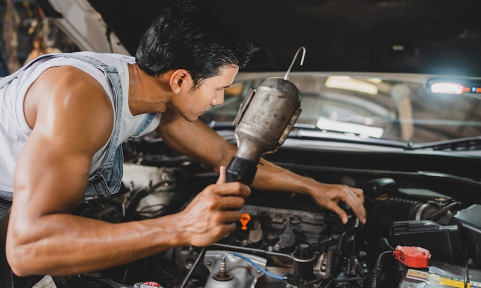

New year, fresh start, all that. But while you're setting resolutions about the gym or eating better, how about one that actually saves you money and keeps you alive? Take care of your car this year. The whole year — not just when something breaks.
We built this seasonal maintenance guide because most people don't think about their vehicle until a warning light comes on or something starts making a noise. By then, you're usually looking at a bigger repair bill than if you'd stayed ahead of it. This is the schedule we recommend to every customer who drives through our shop at 568 Madison Ave. Bookmark it. Come back to it every few months. Your car — and your wallet — will thank you.
WINTER (JANUARY - MARCH): SURVIVE THE COLD
You're in the thick of it right now. January in Paterson means salt-covered roads, freezing mornings, and potholes multiplying like rabbits. Here's what needs your attention.
Battery. Cold weather is a battery killer. At 32°F, your battery loses about 35% of its cranking power. At zero degrees, it loses over half. If your battery is three years old or more, get it tested. We do it for free. Five minutes could save you from being stuck in a Clifton parking lot at 7 AM wondering why your car won't turn over.
Tires. If you haven't switched to winter tires yet, you're late — but it's not too late. Winter tires outperform all-seasons in every cold-weather metric: stopping distance, cornering grip, acceleration traction. If you're sticking with all-seasons, at least check your tread depth and pressure. Pressure drops roughly 1 PSI per 10-degree temperature change, so what was fine in October is probably low now. Every tire. Including the spare.
Antifreeze. Your coolant should be a 50/50 mix of antifreeze and water. This protects down to about -34°F. If it hasn't been flushed in two years, do it now. Old coolant loses its anti-corrosion properties and can damage your radiator, water pump, and heater core from the inside out. That's a quiet, expensive kind of damage.
Wipers and washer fluid. Replace any wiper blades that streak or chatter. Use winter-rated washer fluid rated to at least -20°F — the blue stuff, not the cheap green summer formula that'll freeze on your windshield mid-drive on Route 4.
SPRING (APRIL - JUNE): RECOVER FROM WINTER
Winter beats your car up. Spring is when you assess the damage and fix what needs fixing before summer road trip season.
Wheel alignment. This is huge. Paterson's roads are brutal by March — potholes everywhere, crumbling shoulders, steel plates over construction sites. One bad pothole hit can knock your alignment off, and you'll notice it as the car pulling to one side, uneven tire wear, or a steering wheel that sits crooked. We see more alignment jobs in April than any other month. If you drove through pothole season around Passaic County, just get it checked. Misalignment eats through tires fast, and tires are expensive.
Brake inspection. Salt and moisture accelerate brake wear and corrosion. After a full winter of wet, salty driving around North Jersey, your brake pads, rotors, and hardware deserve a close look. Grinding noises, a soft pedal, or the car pulling during braking all mean something's wrong. Don't guess — get them inspected.
Tire rotation. If you haven't rotated your tires in 5,000 to 7,000 miles, spring is the time. Rotating tires evens out wear patterns and extends the life of the whole set. If you ran winter tires, now's when you swap back to all-seasons. Store the winters properly — cleaned, in bags, out of direct sunlight — and they'll last you multiple seasons.
Underbody wash. Road salt is corrosive. It clings to your undercarriage, brake lines, and exhaust components all winter. A thorough underbody rinse in April — not just a regular car wash, but a real underbody spray — helps prevent rust that can cause structural and mechanical problems down the road. Literally any car wash with an undercarriage option works. Just do it.
SUMMER (JULY - SEPTEMBER): HANDLE THE HEAT
People forget that heat is just as hard on cars as cold. Different problems, same neglect.
Air conditioning. Test it in June before the first real heat wave hits. If it's blowing lukewarm air or taking forever to cool down, the system might be low on refrigerant or have a failing compressor. AC repairs in a heat wave take longer because every shop in Passaic County is backed up. Beat the rush.
Tire pressure. Heat increases tire pressure — the opposite of winter's problem. For every 10-degree increase, you gain about 1 PSI. Over-inflated tires wear unevenly down the center of the tread and have a smaller contact patch with the road, which means less grip. Check pressure in the morning before you drive, when the tires are cold, and set them to the number on your door jamb sticker. Not the number on the tire sidewall — that's the maximum, not the recommendation.
Coolant system. Your engine works harder in traffic on hot days, and the cooling system is what keeps it from overheating. Check coolant level and condition. Look at hoses for cracks, bulges, or soft spots. A blown radiator hose on the Garden State Parkway in August traffic is about as miserable as it gets. Inspect the radiator cap too — a weak cap can't hold proper system pressure, and that means the coolant boils at a lower temperature.
Road trip prep. Heading down to the Shore from Paterson? Point Pleasant, Seaside, LBI — wherever you're going, run through a quick checklist before you load up the car. Check all fluids, tire pressure and tread, lights, and belts. Make sure your spare tire is inflated and your jack works. Twenty minutes in the driveway beats two hours on the shoulder of the Parkway.
FALL (OCTOBER - DECEMBER): GET READY FOR ROUND TWO
Fall is prep season. The temperature is dropping, leaves are clogging everything, and winter is coming back around. Here's how to get ahead of it.
Winter tire swap. Once temperatures consistently drop below 45°F — usually mid-to-late November in the Paterson area — switch to winter tires. All-season tires start losing flexibility and grip below that threshold. Don't wait for the first snowfall. By then, every tire shop in North Jersey has a two-week wait. Get ahead of the rush. We start getting winter tire requests in October, and honestly, that's the smart play.
Fluid check and top-off. Go through everything: oil, coolant, brake fluid, transmission fluid, power steering fluid, windshield washer fluid. Top off what's low. Replace what's old. If your oil change is due in December, just do it in November. You don't want to deal with it when it's 20 degrees out.
Wiper blades. Replace them every fall. Period. They're cheap, they wear out faster than people think, and you will absolutely need them working perfectly from November through March. Streaky wipers in a winter storm on I-80 are genuinely dangerous.
Battery test. Again. Yes, you might have tested it in January. Batteries can weaken over the summer too — heat actually degrades battery internals faster than cold does. The cold just reveals the weakness. A fall battery test catches problems before that first freezing morning when you turn the key and get nothing.
Lights and heater. Test all exterior lights — headlights, taillights, brake lights, turn signals, fog lights. Days get short fast in November, and you're driving in the dark a lot more. Check that your heater and defroster are blowing hot. A broken heater isn't just uncomfortable — if your defroster doesn't work, your windshield fogs up and you can't see. That's a safety issue, not a comfort issue.
THE STUFF THAT DOESN'T CARE WHAT SEASON IT IS
A few things should be on your radar year-round, regardless of weather:
- Oil changes — every 5,000 to 7,500 miles for most modern cars running synthetic. Check your owner's manual. Don't go by the old "every 3,000 miles" rule unless you're running conventional oil.
- Tire pressure — check monthly. It takes two minutes with a $5 gauge. There's no excuse.
- Unusual noises or vibrations — don't ignore them. A new squeak, rattle, vibration, or pull is your car telling you something. The longer you wait, the more it costs.
- Check engine light — get it scanned. Could be a loose gas cap. Could be a catalytic converter. Either way, ignoring it doesn't make it go away.
MAKE 2026 THE YEAR YOU STAY AHEAD
Most car problems are preventable. That's not a sales pitch — it's just true. The customers who come in for regular maintenance spend less money over the life of their vehicles than the ones who only show up when something fails. A $40 tire rotation prevents $600 in premature tire replacement. A $20 coolant check prevents a $1,200 radiator job. The math is simple.
Madison Tires & Wheels is here for all of it — every season, every service, every weird noise you can't quite describe. We're at 568 Madison Ave in Paterson, open 24/7, no appointment needed. Bring this checklist with you if you want. We'll walk through it together and make sure your car is ready for whatever 2026 throws at it.
NEED TIRE SERVICE?
Madison Tires & Wheels is open 24/7 at 568 Madison Ave, Paterson NJ. Free inspections, no appointment needed.